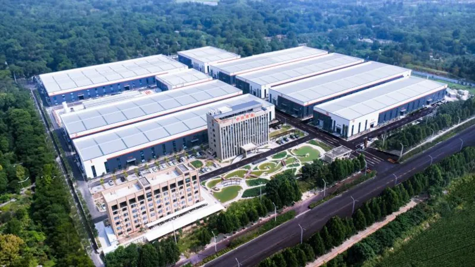
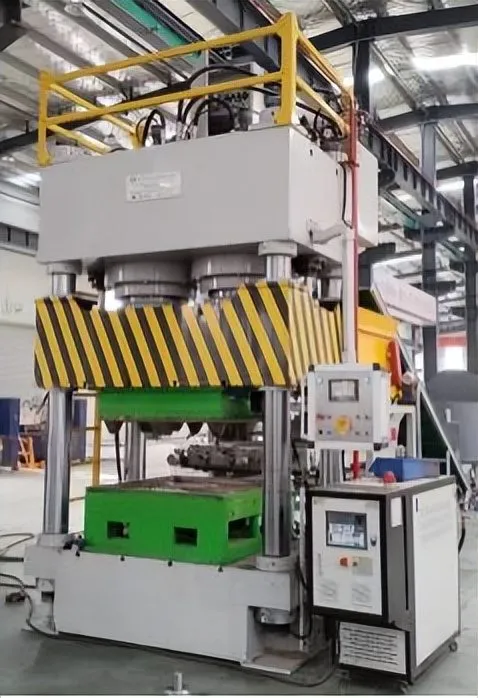
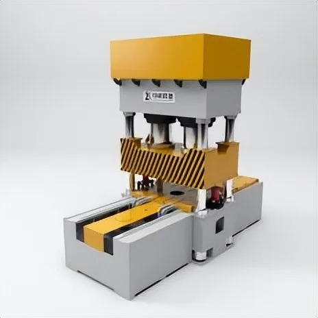
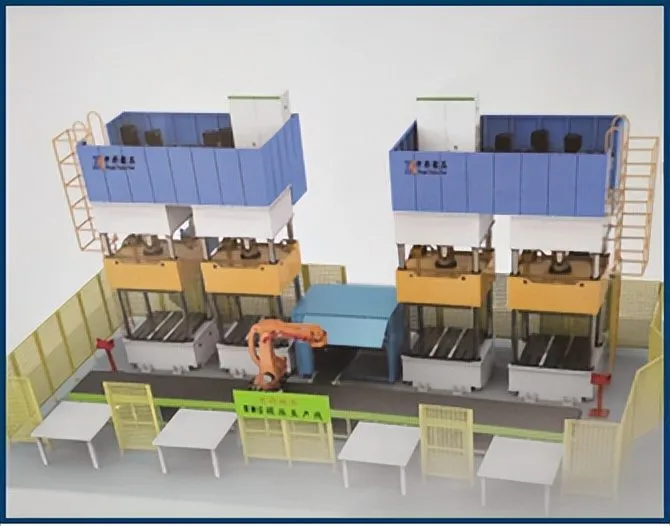
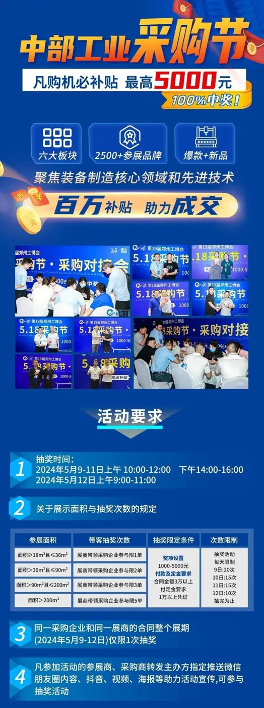

展商推荐 | 中科液压机邀您参观5月郑州工博会
首页 / 展商推荐 | 中科液压机邀您参观5月郑州工博会
优质展商推荐
河南中科智能装备有限公司
展位号：B-T011
诚邀您参观
2024郑州工业装备博览会
5月9-12日|郑州国际会展中心

企业简介
河南中科智能装备有限公司成立于 2021 年 8 月，位于河南省安阳市滑县产业集聚区东环路与黄河路交叉口向西 100
参展产品
高精度伺服液压机

立柱表面淬火后外圆磨度硬锣四柱导向由原来的耐磨件改成铜套导向
移动工作台原来 100MM 改成 280MM
移动工作台采用液压马达驱动
移动工作台采用四缸顶出平移动
双工位四柱液压机

新式设计制作理念，配备主缸、辅助缸，实现强制快速下行，慢速加压、快速回程，机器达到小功率高效率
主机柱塞杆、立柱均进行表面硬度处理，防止划伤
立柱、活塞杆均经过电镀硬铬处理
电机、油泵、阀件、电气元件、密封元件均为行业知名厂家、可靠品牌
液压、电气、机械部分各种安全可靠的保护措施
油路连接用钢管起立体骨架，高压软管道连接，充分消除震动，减缓泄漏外形美观
无接触式感应开关，长期稳定可靠使用
长时间的负载调试，确保设备长期基本无故障，免维修使用
设备带有立柱润滑系统，可加油润滑
三梁全部采用接件煤后退火
BMC/DMC 自动模压生产线

BMC/DMC自动模压生产线主要由模压机、团材计量分块机、机械手等设备组合而成能满足大部分BMC/DMC利品成科工艺的产品生产自动化
自动化程度高 可减少人工成本
成利效幸高，产品强度高
配置的BMC/DMC团材计量分块机可有效的提高产品质伞
锁定黄金五月，抢占中部市场
展位详询：15038392685
·END·
